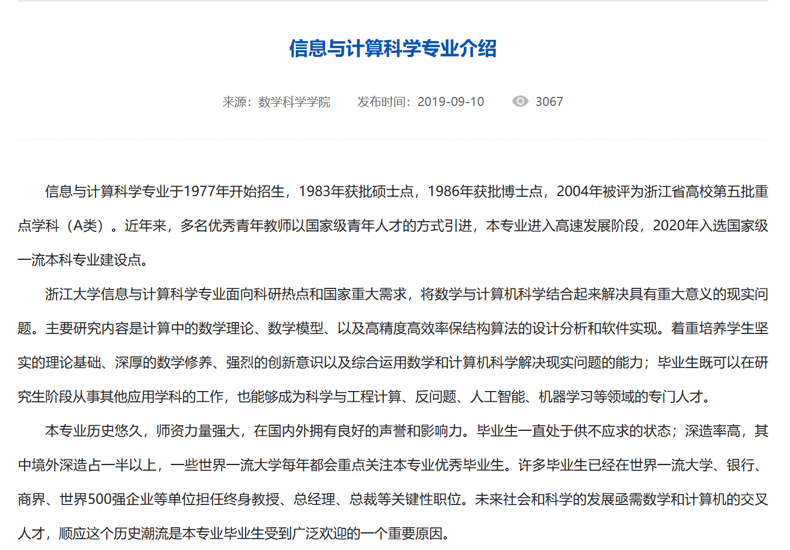

<!DOCTYPE html>
<html lang="en">
  <head>
    <meta charset="utf-8" />
    <meta name="viewport" content="width=device-width, initial-scale=1.0, maximum-scale=1.0, user-scalable=no" />

    <title>reveal-md</title>
    <link rel="shortcut icon" href="./favicon.ico" />
    <link rel="stylesheet" href="./dist/reset.css" />
    <link rel="stylesheet" href="./dist/reveal.css" />
    <link rel="stylesheet" href="./dist/theme/league.css" id="theme" />
    <link rel="stylesheet" href="./css/highlight/tomorrow-night-bright.css" />


  </head>
  <body>
    <div class="reveal">
      <div class="slides"><section  data-markdown><script type="text/template">

## 信息与计算科学专业认知

   ——浙江大学数学科学学院信计2101胡子豪

</script></section><section  data-markdown><script type="text/template">

## Part 1 专业介绍

1. 专业简介
2. 相关课程设置

</script></section><section ><section data-markdown><script type="text/template">

### Part 1.1 专业简介

- 信息与计算科学专业是以信息领域为背景，数学与大数据处理，计算机管理相结合的特色专业。是以数学为基础，信息、大数据与计算机融合的特色专业。
- 信息与计算科学专业主要学习信息科学和计算科学的基础理论、基本知识和基本方法。本专业培养的毕业学生拥有深厚的数学基础，能熟练地使用计算机,具备在信息与计算机科学领域的某个方向上，从事科学研究，创新性的解决实际问题，设计开发有关计算机软件的能力。
  - 进一步，对于其中的一个方向计算数学，它是由数学、物理学、计算机科学、运筹学与控制科学等学科交叉渗透而形成的一个理科专业。


</script></section><section data-markdown><script type="text/template">



</script></section><section data-markdown><script type="text/template">

### Part 1.2 相关课程设置
（针对浙大信计专业）
- 主干课程为 复变函数、数值代数、数学分析Ⅲ、常微分方程、高等代数与解析几何Ⅱ、数据结构和算法、数值分析

</script></section></section><section  data-markdown><script type="text/template">

## Part 2 个人认知

1. 一些误区
2. 学习体验
3. 前景展望

</script></section><section ><section data-markdown><script type="text/template">

### Part 2.1 一些误区

- 这是一个数学专业！
- 但它有两个方向：计算数学与信息科学
- 计算数学与基础数学、应用数学的比较

</script></section><section data-markdown><script type="text/template">

- 这个专业过去叫计算数学，主要研究内容是采取计算机的手段，利用数学方法去解决信息学中的计算问题。不学习计算机相关的硬件知识，但是会学习编程。可以认为是应用数学在信息领域的分支。这个专业可以被认为是应用数学和计算机科学的交叉学科。

</script></section><section data-markdown><script type="text/template">

1. 应用数学专业培养掌握数学科学的基本理论与基本方法，具备运用数学知识、使用计算机解决实际问题的能力，受到科学研究的初步训练，能在科技、教育和经济部门从事研究、教学工作或在生产经营及管理部门从事实际应用、开发研究和管理工作的高级专门人才；

	- 计算数学是由数学、物理学、计算机科学、运筹学与控制科学等学科交叉渗透而形成的一个理科专业。

2. 基础数学也叫纯粹数学，专门研究数学本身的内部规律。中小学课本里介绍的代数、几何、微积分、概率论知识，都属于纯粹数学。纯粹数学的一个显著特点，就是暂时撇开具体内容，以纯粹形式研究事物的数量关系和空间形式。

</script></section><section data-markdown><script type="text/template">

### Part 2.2 学习体验

- 数学专业，懂的都懂
- 能体会到学科交叉的乐趣，学习数学知识、掌握编程能力
- 缺失计算机专业方面的专业基础课，如操作系统，计算机网络，计算机组成原理等

</script></section><section data-markdown><script type="text/template">

### Part 2.3 专业前景展望

- 单就计算数学来说，未来去向主要有以下两方面：
  - 升学并继续从事科研工作：可去往国内国外高校，研究方向有非线性数值代数及复动力系统、非线性方程组的数值解法、计算机模拟与信息处理等；
  - 就业：数据分析师；金融分析师；量化、工程数值计算；相关软件底层算法开发相关的岗位
  - 对口的行业有：银行、互联网以及部分国企大企


</script></section></section><section  data-markdown><script type="text/template">

## 感谢观看</script></section></div>
    </div>

    <script src="./dist/reveal.js"></script>

    <script src="./plugin/markdown/markdown.js"></script>
    <script src="./plugin/highlight/highlight.js"></script>
    <script src="./plugin/zoom/zoom.js"></script>
    <script src="./plugin/notes/notes.js"></script>
    <script src="./plugin/math/math.js"></script>
    <script>
      function extend() {
        var target = {};
        for (var i = 0; i < arguments.length; i++) {
          var source = arguments[i];
          for (var key in source) {
            if (source.hasOwnProperty(key)) {
              target[key] = source[key];
            }
          }
        }
        return target;
      }

      // default options to init reveal.js
      var defaultOptions = {
        controls: true,
        progress: true,
        history: true,
        center: true,
        transition: 'default', // none/fade/slide/convex/concave/zoom
        slideNumber: true,
        plugins: [
          RevealMarkdown,
          RevealHighlight,
          RevealZoom,
          RevealNotes,
          RevealMath
        ]
      };

      // options from URL query string
      var queryOptions = Reveal().getQueryHash() || {};

      var options = extend(defaultOptions, {"width":1520,"height":950,"margin":0.04,"transition":"convex","slideNumber":true}, queryOptions);
    </script>


    <script>
      Reveal.initialize(options);
    </script>
  </body>
</html>
